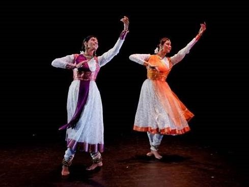

KATHAK

Kathak is traditionally attributed to the traveling bards of ancient northern India, known as Kathakas or storytellers.[59] The term Kathak is derived from the Vedic Sanskrit word Katha meaning "story", and kathaka in Sanskrit means "he who tells a story", or "to do with stories".[59][60] Kathak evolved during the Bhakti movement, particularly by incorporating childhood and amorous stories of Hindu god Krishna, as well as independently in the courts of north Indian kingdoms.[59][61] It transitioned, adapted and integrated the tastes and Persian arts influence in the Mughal courts of the 16th and 17th century, was ridiculed and declined in the colonial British era,[51][62] then was reborn as India gained independence.[50][63]
Kathak is found in three distinct forms, named after the cities where the Kathak dance tradition evolved – Jaipur, Benares and Lucknow.[64] Stylistically, the Kathak dance form emphasizes rhythmic foot movements, adorned with small bells (Ghungroo), the movement harmonized to the music, the legs and torso are generally straight, and the story is told through a developed vocabulary based on the gestures of arms and upper body movement, facial expressions, stage movements, bends and turns.[50][61][65].
Kalamkari is a type of hand-painted cotton textile produced in the Indian state of Andhra Pradesh. Only natural dyes are used in Kalamkari, which involves twenty-three steps.[1][2][3]
There are two distinctive styles of Kalamkari art in India – Srikalahasti style and the Machilipatnam style. The Srikalahasti style of Kalamkari, where the "kalam" or pen is used for freehand drawing of the subject and filling in the colors, is entirely hand worked. This style flourished in temples centered on creating unique religious identities, appearing on scrolls, temple hangings, chariot banners as well as depictions of deities and scenes taken from the Hindu epics (e.g. Ramayana, Mahabharata and Purana). The style owes its present status to Kamaladevi Chattopadhyay who popularized the art as the first chairperson of the All India Handicrafts Board.[4]p>